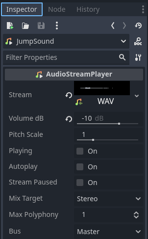

Player Sounds
IMPORTANT! This module requires the Juice Setup module to be completed first!
Sounds are one of the most important parts for game feel. Adding them can make actions feel more responsive, and as such adding sounds to our player's most important actions (jumping, falling and getting hurt) will go a long way in making the game feel nice.
Jumping Sounds
First things first go to your player scene. Right click the player node and create a new AudioStreamPlayer node as a child. Rename it to JumpSound.

Next we need to import our jump sound from the Player Sounds folder in your VGDC-2024 Assets folder.
If you are not taking this course in person, you can download the assets Here
Now select your JumpSound node. In the inspector you can drag the jump sound file from our file system to the stream property, as well as change the volume of the sound (I set mine to -10 db.)
To actually play the sound, however, we will need to go into our player script. We will add the following line of code to our jump_effects function:
func jump_effects():
$JumpSound.play()Landing Sounds
To add sounds when the player lands repeat the same process as jumping sounds, creating a new AudioStreamPlayer node and naming it LandSound. Import the sound and drop it into the LandSound's stream property. Though once you are ready to move to the script add the following to the land_effects functionL
func land_effects():
$LandSound.volume_db = (stored_velocity.y * 0.1) - 60.0
$LandSound.play()Note that the line setting the LandSound's volume_db is causing the volume to scale with the player's vertical velocity. Without this, falling one tile would be just as loud as falling one hundred, which would not make much sense and would get very annoying.
And that is it! Go ahead and try out the new sounds for your player then move on to another module!